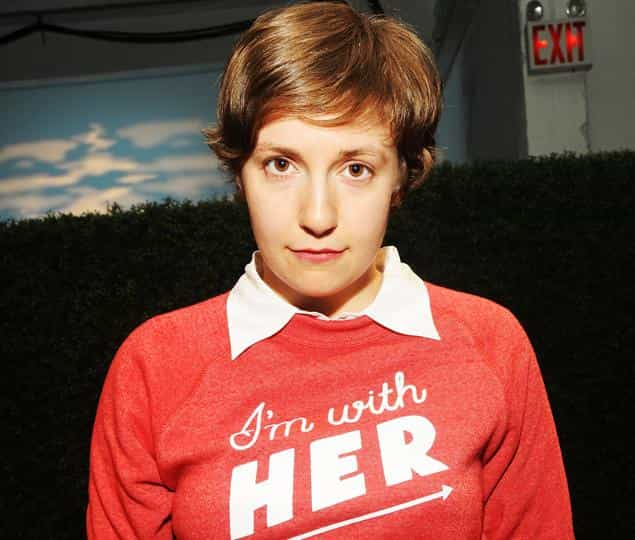
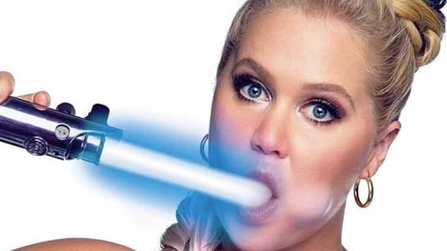
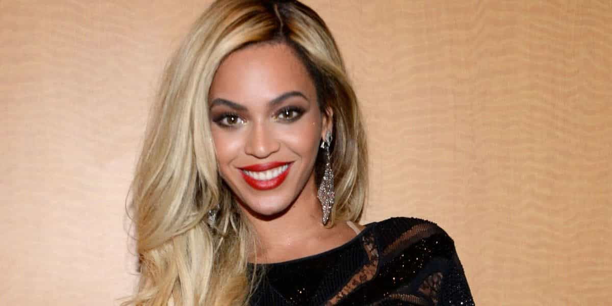
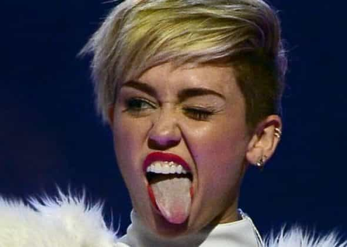
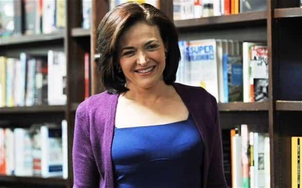
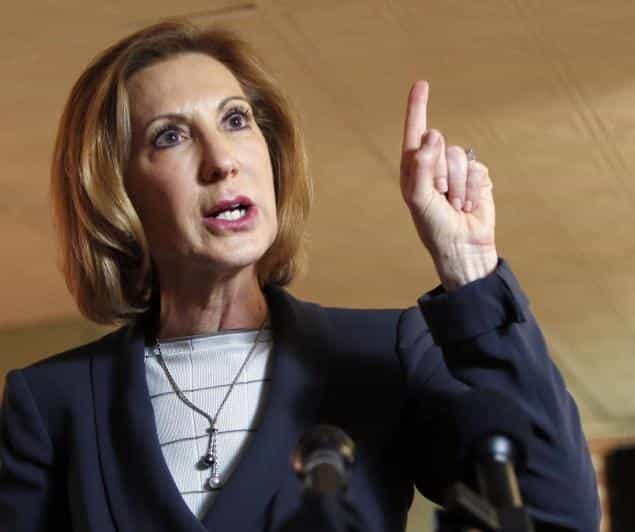

< < < Back
Top 10 Worst Female Role Models In The Entire World – Return Of Kings
One of the most disturbing aspects of modern culture is the mainstream media’s obsession with promoting slutty, corrupt, and untrustworthy women under the guise of “empowerment.” While there’s nothing wrong with encouraging girls to have healthy self-esteem, the kinds of women held up as role models by the media are horrible examples for girls to follow.
Here are ten female role models promoted by the media and why they make terrible idols for girls:
1. Hillary Clinton
Hillary Clinton, wife of former president Bill Clinton and former Senator and Secretary of State, is currently the presumptive front-runner for the Democratic presidential nomination. Throughout her career, Hillary has positioned herself as a champion of women’s issues, famously declaring that “women’s rights are human rights” in a 1995 speech, and her success in politics has been lauded by the media as a positive model for girls. Prominent feminists such as Amanda Marcotte have declared their support for Hillary in the presidential race solely because she is a woman.
Beyond the fact that Hillary Clinton would have never gotten anywhere were it not for her marriage to Bill, she is arguably the most corrupt and untrustworthy politician in America. Beyond her involvement in her husband’s corruption scandals when he was president, Hillary has been the subject of an ongoing investigation examining whether she leaked classified information via her private email server, a federal crime. Hillary has also been implicated in the 2012 Benghazi attack, in which ISIS-affiliated militants stormed an American diplomatic compound in Benghazi, Libya, killing Ambassador J. Christopher Stevens and three others.
Throughout her life, Hillary Clinton has shown a callous, psychopathic disregard for the lives that have been ruined by her actions. She was once caught on tape laughing and bragging about how she got a child rapist off on lesser charges during her career as an attorney, and she also appeared on national news laughing about the death of former Libyan strongman Muammar Gaddafi. When she was being questioned by the Senate over her role in the Benghazi attack, Hillary suddenly blurted out “What difference does it make?” in regards to questions over why the Islamic attackers were able to penetrate the compound and kill Americans.
Indeed, Hillary Clinton has a long history of being abusive to her staffers, colleagues and Secret Service agents. For example, she once told a Secret Service agent to “get fucked” after he said “Good morning” to her, and she would yell at Secret Service agents for driving over bumps. During Bill Clinton’s failed campaign for the House in 1974, Hillary purportedly angrily called one of his staffers a “fucking Jew bastard,” the revelation of which nearly sank her bid for the Senate in 2000. Secret Service agents and former Hillary staffers consistently describe her as being in a state of perpetual rage.
Finally, despite her constantly claiming to be an advocate for feminism, Hillary Clinton has played a large role in smearing the numerous women who’ve accused her husband Bill of rape. In his book The Clintons’ War on Women, Roger Stone details how Hillary would hire private investigators to dig up dirt on Bill Clinton’s accusers in order to intimidate them into silence. This is the same woman who recently declared that “every survivor of sexual assault deserves to be heard, believed and supported.”
2. Lena Dunham

Lena Dunham is an actress best known for creating and starring in the HBO show Girls, currently in its fifth season. Girls has been lauded by the mainstream media for its “honest” depictions of life for young women in America, and Dunham has received praise in particular for her numerous nude scenes in the show, because her lumpy, shapeless body represents how “real” women look with their clothes off. Dunham has also been stumping for Hillary Clinton on the campaign trail and even did a one-on-one interview with her.
As I’ve joked in the past, if Lena Dunham is the voice of my generation, I’m gonna beg Generation X to adopt me. The only reason why Girls was green-lit in the first place is because Dunham and her co-stars have rich and famous parents; her father is a well-known New York artist. After high ratings for the first two seasons, Girls saw a collapse in its viewership, resulting in the show’s cancellation following the completion of its sixth season next year.
Beyond Dunham’s illusory success in showbiz, she is an admitted sexual predator. In her 2014 memoir Not That Kind of Girl, she described how she “spread open” her kid sister Grace’s vagina and found pebbles inside. Dunham also confessed to masturbating in the same bed as Grace. When conservative websites publicized these passages, Dunham threatened to sue them for quoting her own book, also claiming she had to cancel several book tour dates because she was in a “rage spiral.”
In addition, Lena Dunham has lied about being raped. In Not That Kind of Girl, she discusses how she was purportedly raped by a Republican named “Barry” during her time at Oberlin College. When Gawker and other websites tried to dig up the identity of Dunham’s attacker, they discovered that he was at best a composite character—a character Dunham created by merging several other real people she knew—or at worst a complete lie.
3. Amy Schumer

Amy Schumer is a stand-up comedian known for her TV show Inside Amy Schumer as well as for her feminist-friendly style of comedy. Indeed, when Jerry Seinfeld criticized college students last year for being too politically correct, Schumer was frequently cited by SJWs as an example of how comedians can be both funny and sensitive to the feelings of oppressed groups.
Recently, however, Amy Schumer was caught stealing jokes from the late Patrice O’Neal, quite possibly the worst sin a comedian can commit. Additionally, while her job is to make fun of people, Schumer herself is incapable of taking a joke. She recently went on the warpath against a young fan of hers who made a joke about her being a slut, accusing him of “slut-shaming” and bullying him into making an apology. This is despite the fact that Schumer herself uses sex to sell her act, as shown by the above image.
4. Beyoncé

While most pop tarts have a short shelf life, Beyoncé Knowles has extended her 15 minutes of fame by rebranding herself as a feminist pop diva, singing songs about female “empowerment.” Rising to fame as a member of the girl group Destiny’s Child, Beyoncé has augmented her solo career with political activism, declaring herself to be a “modern-day feminist.” Indeed, during her performance at the Video Music Awards, Beyoncé had a gigantic “FEMINIST” sign lit up behind her.
For all her paeans to women’s rights, however, Beyoncé has a long history of ripping off her female colleagues. In 1999, Beyoncé forced Destiny’s Child members LeToya Luckett and LaTavia Roberson out of the band after they attempted to replace the band’s manager, Mathew Knowles (Beyoncé’s father), claiming that he was denying them their fair share of the group’s profits. After ruthlessly screwing over her bandmates, Beyoncé would mock them in the song “Survivor,” painting herself as a victim of their evil machinations.
5. Angela Merkel

Angela Merkel is the chancellor of Germany and is widely regarded as the most powerful female politician in the world. Having served since 2005, Merkel is the longest-serving democratically elected head of government in the European Union, and one of the longest-serving in the world. Because the German economy has remained strong throughout the global economic recession, Merkel wields great power in the European Union and has been named the most powerful woman in the world by Forbes a record nine times.
However, Angela Merkel’s domestic policies have thrown Germany into chaos. When the Syrian refugee crisis began last year, Merkel eagerly threw open her country’s gates, forcing Germans to accept hundreds of thousands—possibly millions—of Muslims, straining the country’s infrastructure to the breaking point. Beyond permanently altering Germany’s demographics, these “refugees” overwhelmingly live off of government largess and have no intention of finding work.
To make matters worse, Angela Merkel has imported Muslim rape culture into Germany. During New Years’ Eve, gangs of Muslim “refugees” wandered the streets of Cologne and other cities gang-raping white German women, a practice known in North Africa as “taharrush.” Police have been reluctant to investigate the Muslims, fearing accusations of “racism,” and Merkel has been trying to clamp down on free speech, preventing people from discussing Muslim rape attacks.
6. Miley Cyrus

A fixture in American pop music for nearly a decade, Miley Cyrus has resorted to ever more extreme and disgusting attempts to keep her name in the headlines. While she was best-known for her depiction of the family-friendly Disney character Hannah Montana, Cyrus debuted a new, more “adult” image at the 2013 VMAs, appearing in a low-cut outfit, sticking her tongue out provocatively, and twerking on her duet partner Robin Thicke. Recently, she’s been appearing at concerts wearing a massively over-sized prosthetic penis and fake breasts, making her appear as if she’s topless.
7. Sheryl Sandberg

Sheryl Sandberg is the COO of Facebook and is known as a voice for feminism and women’s empowerment in Silicon Valley. Her book Lean In purports to describe how women can balance raising a family with success in their careers, and she also launched the “Ban Bossy” campaign to encourage girls to be more assertive. Sandberg has also been a vocal advocate for restricting online anonymity due to the fact that it encourages “harassment” against women.
However, Sheryl Sandberg’s blueprint for success in Lean In is completely fraudulent. Wealthy women like Sandberg can balance career and family life because they rely on hired help—maids, nannies, gardeners—that poorer women can’t afford. There’s a racial dimension to this as well, as white women like Sandberg are usually reliant on illegal Mexican laborers to make their lives work.
8. Ronda Rousey
UFC fighter Ronda Rousey has become a household name because of the mainstream media’s contention that anything a man can do, a woman can do better. In addition to being lauded for pursuing a career path that is anything but feminine (beating people’s faces in), her equality to men also apparently extends to domestic violence, which Rousey has admitted to being guilty of. In her autobiography My Fight, Rousey confessed to beating up her former boyfriend after he purportedly took nude pictures of her without her permission. Despite male UFC fighters being suspended for accusations, not admissions, of beating up their girlfriends, Rousey has yet to suffer any consequences for her actions.
9. Carly Fiorina

Carly Fiorina is the former CEO of Hewlett-Packard and a candidate for the Republican presidential nomination. Mainstream conservatives have tried to boost her as an alternative to Donald Trump, with numerous pundits declaring that she won the presidential debate held on September 16, 2015, causing her to see a bump in the polls.
However, Fiorina has had a terrible reputation as both a businesswoman and a politician. During her tenure at HP, she ran the company into the ground, with its stock price falling by half by the time she was ousted as CEO. Fiorina attempted to enter politics in 2010 when she ran for Senate against incumbent California Democrat Barbara Boxer. In an election that saw the GOP take six Senate seats, win control of the House, and seize the majority of governorships, Boxer defeated Fiorina by an embarrassing 10-point margin.
10. Tess Holliday

Tess Holliday (formerly known as Tess Munster) is a fashion model who has gained attention for being plus-sized in an industry where women are expected to be rail-thin. After building a following online via Instagram and Tumblr, Holliday was signed to Milk Model Management last year, making her the largest plus-sized model signed to a major agency. She was also behind the Twitter hashtag #EffYourBeautyStandards, which purported to challenge mainstream conceptions of beauty.
Beyond the fact that Tess Holliday is encouraging obesity and slovenliness in young women, she has also defrauded her fans. in 2014, Holliday sold $40 #EffYourBeautyStandards shirts to her fans, claiming that she would be donating a portion of her profits to a domestic violence charity. Not only did countless fans never receive the merchandise they bought, but Holliday did not donate a single cent of her proceeds to charity. When fans asked Holliday via Facebook, Twitter or Instagram why they hadn’t received their T-shirts, she responded by blocking them.
While there are plenty of positive female role models to be found in our world, the media insists on glorifying women who are corrupt, slutty, or incompetent at their jobs. If a woman is being promoted by the media, it’s almost a given that she’s a terrible person who has committed heinous crimes against others, or is at bare minimum a failure at life.
Young women would be advised to shun these characters and avoid emulating them at all costs.
Read More: Most Female Leaders Are Only Successful Because Of Their Male Relatives